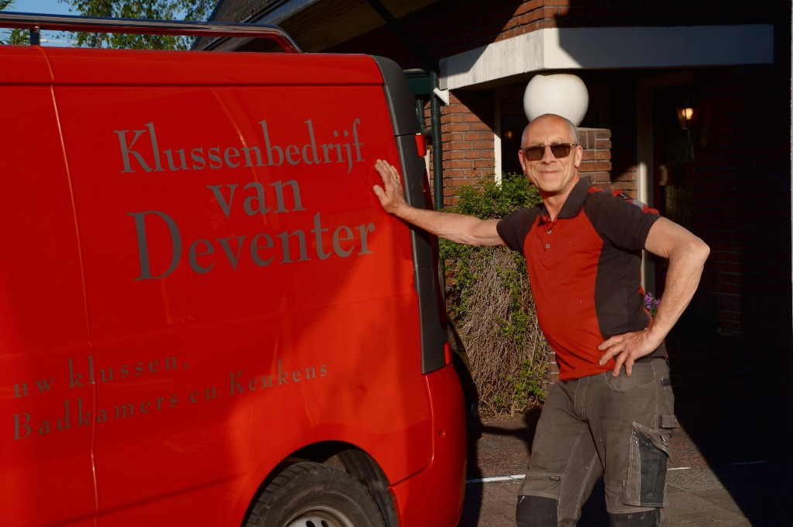

Ik ben Rob van Deventer, zelfstandig klusbedrijf uit Apeldoorn. Ik help u met klussen in en rondom uw woning. Waar ik vroeger complete badkamers renoveerde, richt ik me nu vooral op kleinere werkzaamheden die binnen 2 à 3 dagen klaar zijn — zodat ik u snel kan helpen. Betrouwbaarheid, duidelijkheid en netjes werken staan voorop.
